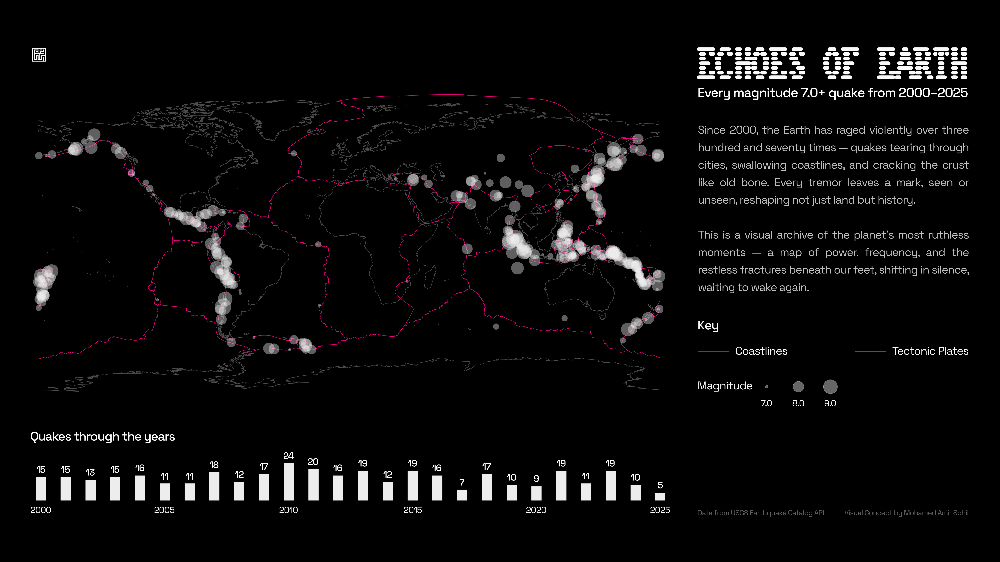

Echoes of Earth
Every magnitude-7.0+ earthquake since 2000, mapped against the plates that caused it.

The Problem
Major earthquakes get reported one at a time, in the moment, with no lasting visual record connecting them to each other. This project compiles every magnitude-7.0+ earthquake from 2000 to 2025 into a single archive, tying where they happen to how often.
The magnitude-7.0 cutoff is itself a meaningful filter, isolating the earthquakes large enough to be genuinely newsworthy and destructive on their own, rather than diluting the archive with the much larger volume of smaller tremors that occur constantly and rarely make headlines.
The Approach
A world map plots all recorded events, sized by magnitude, overlaid directly on tectonic plate boundaries rather than just political borders, so the spatial pattern is visible on the map itself. A year-by-year frequency chart runs alongside it, adding time as a second axis to the same dataset.
The Outcome
The Pacific Ring of Fire is impossible to miss without needing to say it in words.
376 magnitude-7.0+ earthquakes have been recorded globally since 2000 (at the time the project was completed). The spatial layer makes the Pacific Ring of Fire impossible to miss without needing to say it in words — the overwhelming majority of large quakes cluster tightly along the Pacific coastlines of the Americas, Japan, Indonesia, and the wider western Pacific.
2010 stands out as the clear peak at 24 major quakes in a single year, against a baseline that otherwise swings noticeably year to year. In 2017, the count dips to just 7. 2025's low count on the chart is a partial-year artifact, since the project was completed mid-2025.